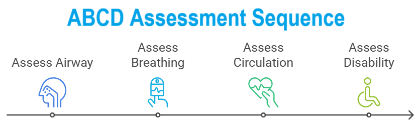
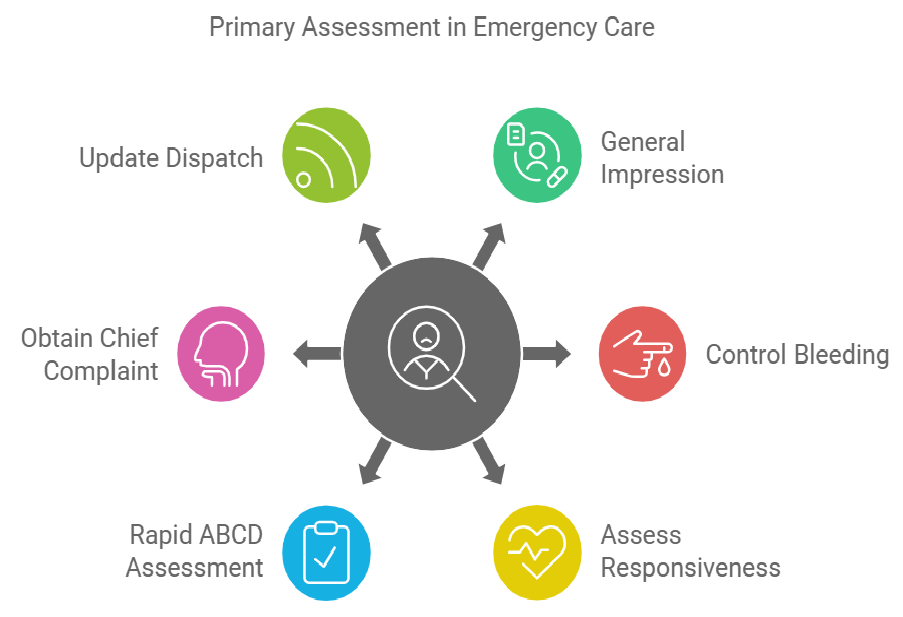
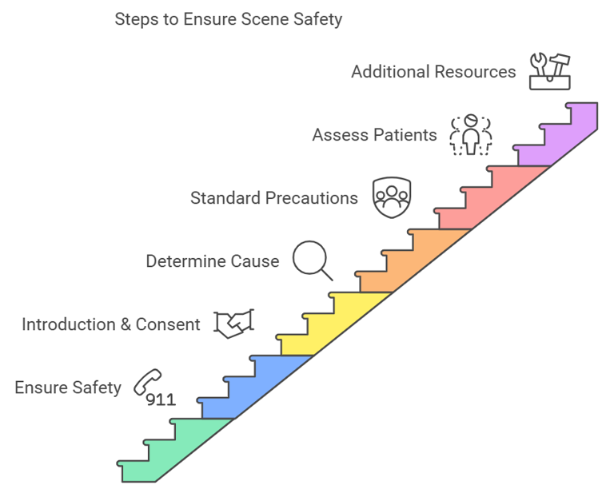

Here's a summary of performing a patient assessment, following the outlined steps:
This process ensures a systematic approach to patient assessment, addressing immediate needs while gathering critical information for ongoing care.
Here is a brief explanation of each element in the RAPID ABCD assessment, which is used for quickly evaluating a patient's immediate needs:
Check if the patient's airway is clear and open. Ensure there are no obstructions (e.g., choking, swelling) that could hinder breathing.
B - Breathing:
Assess the patient's breathing rate, depth, and effort. Look for signs of respiratory distress, such as shortness of breath, rapid or shallow breathing, and abnormal sounds (e.g., wheezing, gurgling).
C - Circulation:
Evaluate the patient’s pulse, skin color, temperature, and any signs of bleeding. Look for indications of good or poor blood circulation, such as a strong, regular pulse versus weak or irregular, and pale or clammy skin.
D - Disability:
This assessment helps identify and prioritize life-threatening conditions that require immediate intervention.
Here's a brief explanation of each element in the SAMPLE acronym, which is used to gather essential patient history during an assessment:
Symptoms are what the patient reports feeling (e.g., pain, nausea).
A - Allergies:
Ask if the patient has any known allergies, including to medications, food, or environmental factors (e.g., bee stings, latex).
M - Medications:
Inquire about any medications the patient is currently taking, including prescriptions, over-the-counter drugs, and supplements.
P - Past Medical History:
Obtain information on the patient's past medical conditions, surgeries, or chronic illnesses (e.g., asthma, diabetes).
L - Last Oral Intake:
Find out what the patient last ate or drank and when. This is particularly important if the patient needs surgery or has gastrointestinal symptoms.
E - Events Leading Up to the Incident:
This acronym helps ensure a thorough and organized collection of patient history.
Here's a brief explanation of each element in the OPQRST acronym, which is used for assessing a patient's pain:
Ask when the pain started and what the patient was doing when it began. Determine if it was sudden or gradual.
P - Provocation/Palliation:
Palliation: Ask what, if anything, makes the pain better (e.g., rest, medication, ice).
Q - Quality:
Describe the type of pain the patient is experiencing. Ask if it feels sharp, dull, throbbing, burning, cramping, or another sensation.
R - Radiation:
Determine if the pain stays in one place or spreads to other areas of the body. Ask if it travels or radiates to other locations (e.g., pain starting in the chest and spreading to the arm).
S - Severity:
Assess the intensity of the pain. Ask the patient to rate it on a scale of 0 to 10, where 0 is no pain and 10 is the worst pain imaginable.
T - Time:
This structured approach helps in understanding the nature of the pain and guides further diagnosis and treatment.
Here's a brief explanation of each element in the AVPU acronym, used for quickly assessing a patient's level of consciousness and neurological function:
The patient is fully awake, aware, and responsive. They can respond to questions appropriately and are oriented to their surroundings (knows who they are, where they are, and what time it is).
V - Verbal Response:
The patient responds to verbal stimuli but may not be fully awake or oriented. They react when spoken to (e.g., opening their eyes, speaking, or following commands) but may appear confused or disoriented.
P - Pain Response:
The patient does not respond to verbal stimuli but reacts to painful stimuli (e.g., pinching, sternal rub). Responses might include movement, groaning, or withdrawal from the painful stimulus.
U - Unresponsive:
The AVPU scale is a quick and simple tool for assessing a patient's level of consciousness, helping to determine the severity of their condition and guide further action.
The goal of this solution is to Jump Start your development and have you up and running in 30 minutes.
To get started with the Nsp Skill Patient Asessment solution repository, follow these steps: 1. Clone the repository to your local machine. 2. Install the required dependencies listed at the top of the notebook. 3. Explore the example code provided in the repository and experiment. 4. Run the notebook and make it your own - EASY !
 

